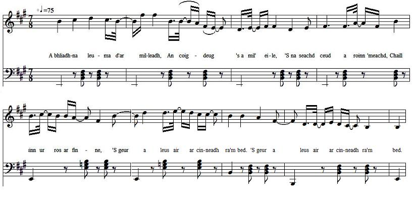

Marbhrann do Mhac 'ic Ailein
Lament on Chief Allan of ClanRanald who fell at Sherrifmuir (1715)
Elégie d'Alain, chef du ClanRanald, tombé à Sherrifmuir (1715)
le Iain Dubh mac Iain 'ic Ailein- by John McDonald (c. 1665 - ?)
As sung by Rev. William Matheson and recorded by James Ross in December 1956 in EdinburghTune - Mélodie
"Marbhrann do Mhac 'ic Ailein"
Sequenced by Christian Souchon

|
To the tune:
The tone background to this page is the Midi transcription of the singing of Rev. William Matheson recorded in December 1956 by James Ross. The record is in the collection of the School of Scottish Studies . Other particulars may be found at the following Internet address: www.tobarandualchais.co.uk/fullrecord/23013/1 To the lyrics This song is an elegy for the deceased chief of Clanranald who fell at Sherrifmuir. As well as praising the dead chief, the bard speaks of the effect on those left behind, especially the chief's widow, and the leaderless clan. These 5-line verses were composed by Iain Dubh mac Iain 'ic Ailein. The whole poem was published in "Sàr-Obair nam Bard Gaelach / Beauties of Gaelic Poetry" edited by John McKenzie in 1865. |
A propos de la mélodie:
Le fond sonore de cette page est la transcription Midi du chant interprété par le Rév. William Matheson et enregistré en décembre 1956 par James Ross. L'enregistrement est conservé par la School of Scottish Studies . On trouvera d'autres détails à l'adresse Internet: www.tobarandualchais.co.uk/fullrecord/23013/1 A propos des paroles Ce chant est une élégie pour le chef du clan Clanranald tombé à Sherrifmuir. Au panégyrique du chef mort, le barde ajoute des considérations sur les conséquences de sa disparition pour ses proches, en particulier sa veuve, et pour son clan désormais sans guide. Ces strophes de 5 vers furent composées par Iain Dubh mac Iain 'ic Ailein. Le poème complet a été publié dans "Sàr-Obair nam Bard Gaelach / Beauties of Gaelic Poetry", un florilège edité par John McKenzie en 1865. |

|
ELEGIE ON MAC MHIC AILEIN
by John McDonald IAIN DUBH MAC IAIN 'IC-AILEIN. JOHN McDONALD, commonly Iain Dubh Mac Iain 'Ic-Ailein, i. e. John of black locks, son of John, the son of Allan, was a gentleman of the Clanronald family, and was born about the year 1665. He received all the advantages of education, together with the opportunities that the times in which he lived offered to a man of observation. He was immediately descended from the Maer family a great branch of the Clanronalds of whom many individuals were highly distinguished for prowess, wit, and poetical powers. He resided in the island of Eig, on the farm of Grulean. Mr McDonald was not a poet by profession, although he was considered by good judges not inferior to any bard of his age. He lived in easy circumstances. Amid his rural pursuits, he had ample time to woo the muses, or pass his leisure as inclination or opportunity occurred. He, therefore, put himself under no restraint, but sung when inspired, and made observations on men and manners ; and his remarks were generally allowed to be shrewd and just. Few anecdotes can be expected of a man who passed a quiet life in such circumstances. He always held a respectable rank in society. His poems display taste and elegance, and his compositions, occasional and gratuitous as they were, must have been numerous. Source: Sar-Obair nam Bard Gaelach (The beauties of Gaelic Poetry, Glasgow, 1841) by John McKenzie, p.69 & 70. |
MARBHRANN DO MHAC MHIC AILEIN
le Iain Dubh Mac Iain 'Ic Ailein 1. A bhliadhna leuma d'ar milleadh, An coig-deug 's a mil' eile, 'S na seachd ceud a roinn imeachd, Chaill sinn ur-ros ar finne, 'S geur a leus air ar cinneadh ra'm bed. 'S geur a leus air, &c. 2. Mo sgeul cruaidh 's mo chradh cridhe, Ar triatb Raonullach dlitheach, Dh-ordaich Dia dhuinn mar thighearn' Gu la-bhrath nach dean tighinn, 'S tu 'n Inbhir-Phephri fo' rithe na'm Lord, 'S tu 'n Inbhir-phephri, &c. 3. Marcach sunndach nam pillein, Air each cruidheach nach pilleadh, Nach d' ghabh ciiram no giorag, An am dublachaidh 'n teine, Mo sgeul geiw- bha do spiorad ro-mhor, Mo sgeul geur, &c. 4. Cuirtear aigeantach, mileant Muirneach, macnasach, fior-ghlic, Ga 'n robh cleachdadh gach tire, Agus fasan gach rioghachd Teanga bhlasda ri innse gach sgedil. Teanga bhlasda, &c. 5. Leoghann tartarach, meanmnach, 'S cian 's as fad a chaidh ainm ort, Beul a labhradh neo-chearbach, Bu mhor do inheus aig fir Alba, 'S tu toirt brosnachadh calina do'n t-shlogh. 'S tu toirt brosnachadh, &c. 6. Fiuran gasda, deas, dealbhach, 'Sgathan tlachdarna h-Armailt, 'N uair a dh eireadh an fhearg ort, B' ann air ghile 's fiamh dearg oirr, Cha ruin pillidh bha meamna 'n laoich dig. Cha ruin pillidh, &c. 7. Bha thu teom ann 's gach fearra-ghniomh, Bu tu sgiobair na f'airge, Ri la cSs 's i tighin gailbheach, 'N uair a dhcireadh i garbh ort, 'S tu gu'n diobradh an t-anabhar ma bord. 'S tu gun diobradh, &c. 8. 'N am siubhal a gharbhlaich. Bu tu taghadh an t-shealgair, As do laimh bu mhor m'earbsa, Air an fhiadh bu tu 'n cealgair, 'S tu roinn gaoith' agus talmhuinn ma shroin. 'S tu roinn gaoith, &c. 9. Oirune dh' imicham fuathas, An sgriob so thainig o thuath oirnn, Tha ar cabaill air fuasgladh, Chaidh ar n-eirthire sguabadh, A's sinn mar chuileanan cuaine gu'n treoir. A's sinn mar chuileanan, &c. 10. Chaill sinn reulla nan dualarnh, Chaidh ar riaghailt a ghluasad, Ar cairt-iuil air falbh uaimie, Bhrist ar sliuir ; mo cheud truaighe, Sinn mar luing aim a' chuan 's i gu'n seol. Sinn mar luing, &c. 11. Sinn mar iinne gun mhathair, Mar threud gun bhuachaille gnathaicht Sinntbbhruid aig ar namhaid, H-uile fear a' toirt tair dhuinn, 'S na coin luirge gach la air ar toir. 'S no coin luirg, &c. 12. Dhuinn 's neo-shubhach an geamhradh, An ruaig a thug sinn gu Galltachd, Cha bu bhuannachd ach call dhuinn, Nis mar cholainn gun cheann sinn O roinn Raonull a's t-shamhradh uainn falbh. O roirin Ruonull, &c. 13. A gnnuis a b' aillidh ri sirreadh, An t-shuil bu bhlaithe gu'n tioma, An leoghann ard air dheagh-oilean, 'Nach d' chuir iiigh an gniomh foilleil, Ach an rioghalnchd shoilleir gu'n leoin, Ach an rioghalnchd, &c. 14. 'S oil learn caradh do cheile, "S bean na h-aonar a'd' dheidh i, 'N deigh a sgaradh o ceud-gradh, Mhic 'Ic-Ailein o'n dheug thu, Fhir a leanadh an fheisd mar bu choir. Fhir a leanadh, &c. 15. Ach fhir thug Maois as an Euphaid, 'S a sgoilt a mhuir na clar reidh dhaibh, Thug an triuir as an eigin O bhi daghadh an creuchdan; A Righ nan righ na leig eucoir da'r coir. A Righ na'n righ, &c. Source: "Sàr-Obair nam Bard Gaelach", pp. 69 & 70 |
ELEGIE DE MAC 'IC AILEIN
de John McDonald IAIN DUBH MAC IAIN 'IC-AILEIN. JOHN McDONALD, comme on appelle communément Iain Dubh Mac Iain 'Ic-Ailein, qui signifie Jean aux cheveux bruns, fils de Jean, fils d'Alain, était issu de la famille Clanronald et naquit en 1665 environ. Il bénéficia de tous les avantages en matière d'éducation et autres que l'époque à laquelle il vécut offrait à un individu doué du sens de l'observation. Il descendait en ligne directe de la famille Maer, une branche fameuse des ClanRanald dont plusieurs membres se distinguèrent par leur prouesses dans les domaines de l'esprit et de la poésie. Il habitait dans l'Île d'Eig, dans la ferme de Grulean. John McDonald n'était pas un poète professionnel, bien qu'il ne fût pas considéré par des juges compétents comme inférieur aux autres bardes de son époque. C'était un fermier aisé dont les activités rurales lui laissaient suffisamment de temps pour courtiser les muses et lui permettaient de leur consacrer ses loisirs au gré de ses inclinations et des circonstances. c'est pourquoi il ne s'imposa jamais de contrainte, mais ne chantait que mû parl'inspiration et pour faire des remarques sur les hommes et leur comportement; et ces remarques furent généralement accueillies comme pertinentes et justifiées. On ne connaît que peu d'anecdotes à propos d'un homme qui mena une vie aussi tranquille. Il tint toujours un rang respectable dans la société. Ces poèmes témoignent de son bon goût et de son élégance et on suppose que ses compositions, toujours occasionnelles et gratuites furent nombreuses. Source: Sar-Obair nam Bard Gaelach (Les beautés de la poésie gaélique, Glasgow, 1841) par John McKenzie pp.69 et 70. |
| Click to know more about CLAN DONALD |